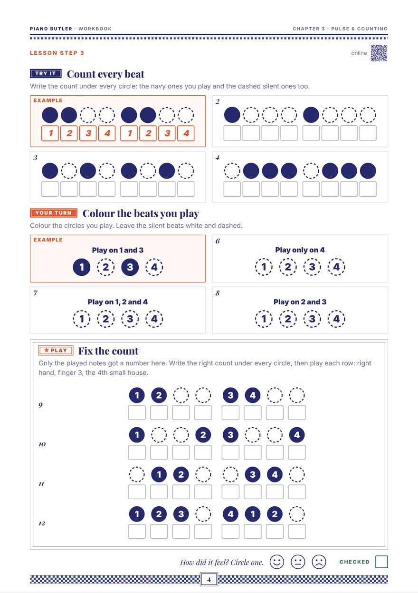

Music has a heartbeat: the pulse. It is steady, with the same gap every time. It goes on even when the notes stop.
A steady beat has the same gap every time, like a heartbeat, a clock, or your feet when you walk.
Not steady means the gaps change. The beat of music is steady.
Pat your knees with both hands 8 times, the same gap every time, like a clock. Then walk 8 steps across the room, one step on each beat.
Give every beat a number: 1 2 3 4, then 1 again. Say one number on each beat, out loud.
Counting out loud keeps the beat steady. Later it tells you where every note goes.
Pat your knees and count 1 2 3 4, four times round, without stopping. Then play one black key on every beat and keep counting.
The beat goes on when you stop playing. Play on 1 and 2. Lift your hand on 3 and 4 and keep counting. Silent beats still count, so you come back in on time.
A dashed circle is a silent beat: count it, but don't play it.
The beat is the steady heartbeat underneath. The rhythm is the long and short sounds on top, like words.
Say walk on one beat: one sound. Say run-ning: two sounds. The beat stays the same and the rhythm changes.
Tap the beat with your foot and say walk, run-ning, walk, run-ning, one word on each beat. Then clap the words while your foot keeps the beat.
Now a new finger plays on each beat. Play each row twice and count out loud: 1 2 3 4. The coral circles show finger numbers, not the count.
Show each one at the piano.

Write the count under every beat circle, played and silent. Colour the beats to play from a short instruction. Then fix rows where only the played notes got a number. One A4 page.
Print this pageThe whole chapter: Lesson Book + WorkbookThe same lesson with moving parts that listen to your taps, and a five-level drill: steady or not, tap along with the click, keep it going on your own, count inside and tap one beat, and tap the beat, not the words.
Open the lessonThe pulse is the steady beat under the music, like a heartbeat. It has the same gap every time. It goes on even when the notes stop.
The beat stays steady underneath. The rhythm is the long and short sounds on top, like words. "Walk" on one beat is one sound; "run-ning" is two. The beat stays the same; the rhythm changes.
Counting out loud keeps the beat steady. Later it tells you where every note goes. It also carries you through silent beats, so you come back in on time.
Give every beat a number, 1 2 3 4, then 1 again, one number on each beat. When the notes get quicker, the count grows, always as the time signature counts: 1 + 2 + 3 + 4 +, then 1 e + a 2 e + a. The + is read "and".
Keep counting. A silent beat is still a beat: lift your hand, say the number, and come back in on the next note, on time.